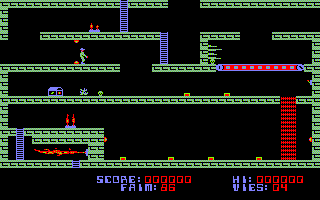
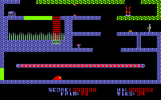

This is a JavaScript port of the Amstrad CPC game "Infernal Runner" made by Eric Chahi in 1985. It is built from the virtual machine interpreter code of Gregory Montoir. I compiled the bytecode to native JavaScript in order to eliminate the interpretive layer and having the whole game as a pure JavaScript program.
You can try out the game directly in your browser here:
I also published the complete source code of my JavaScript program on GitHub.
And here are two screen shots:

